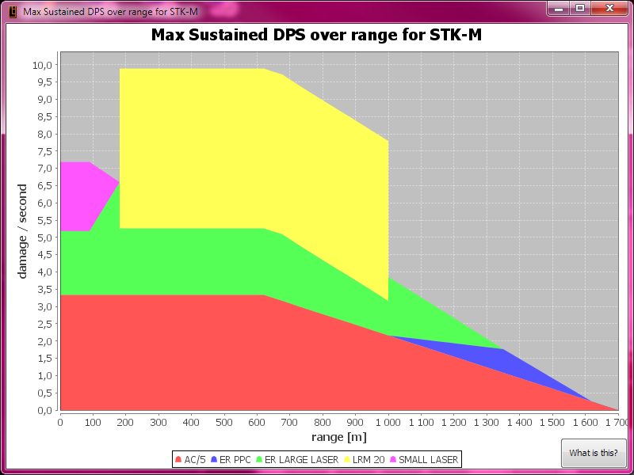

Li Song Mechlab
A lean, mean, green, 'mech loadout creation machine.
View the Project on GitHub EmilyBjoerk/lsml Buy me cake and a cup of tea Donate
TweetThanks to (in no particular order): Urbecker, Sean Lang (NGNG), Marek Tesla, MavRCK
About
Li Song Mechlab (LSML) is an EFT-inspired, open source (GPL v3) tool for making it easier to configure your 'mechs in PGI's MechWarrior Online.
The target audience for LSML is intermediate to advanced pilots who already have a rudimentary understanding of the game mechanics.
In Li Song Mechlab you can configure and share your 'mechs, try different loadouts, see how many tons of ammo you can fit and see how many seconds of continuous fire that will give you, balance your weapons for most efficient heat management with damage graphs and much more.
The main design goals for LSML are:
- Give you the numbers and help you need.
- Hide the stuff you don't need to see.
- Easy and fast to use.
- Portable (Windows, Linux, Android port coming later)
Download & Install
Please use the download link called Release to the left (or above if you're on a mobile device). You should download the 64 bit MSI installer unless you are on a 32bit OS such as Windows XP 32bit or Windows Vista 32bit.
Requirements
- Java 7 or later (http://java.com/en/download/index.jsp) it doesn't matter if it's 32 or 64bit.
- MechWarrior Online must be installed on your computer.
Support, Features, Bugs
If you have any issues with the software, first please see if The Fine Manual (TFM) or the The Frequently Asked Questions (FAQ) can help you.
If you believe your issue to be a bug, please look here: Reporting Issues.
If you would like to request a feature, please open a new issue on the issue tracker where you detail what the feature does, how it would be used and explain why it is awesome.
If you find either of these lacking, please open a new issue on the issue tracker detailing what part of the manual is missing, out of date, or just generally bad.
Screenshots/Videotorials
Here is a video made by Sean Lang from NGNG showing off LSML.
Here are a few screenshots of the UI to give you an idea:

Legal stuff
LSML is licensed under the GNU General Public License v3. However I do require that all contributions to the source code be copyrighted to me.
The terms "Mechwarrior" "Battle Mech" and "Mechwarrior Online" are trademark of their respective owners.
LSML utilizes these third-party libraries (in no particular order):